New Senior School Biology Practical Activity & Work Book Two
Chapter
2
THE DIGESTIVE SYSTEM AND FEEDING MECHANISMS
Notable Concepts
Feeding mechanisms and digestion
Alimentary canal and food digestion
Absorption of food
Background Information
DIGESTION OF FOOD
Heterotrophs are organisms that cannot make their food from simple inorganic substance, rather they feed on already available organic food substances. The complex nature of the organic materials most of these heterotrophs take requires that before the food can be absorbed and assimilated into their bodies, they need not only be ingested but they must be digested (a catabolic process).
Digestion in an organism (Heterotrophs) depends on its complexity and size. The simple unicellular organisms for instance, carry out intracellular digestion within a food vacuole inside the cell while the multicellular organisms usually carry out extra cellular digestion with the gut.
FEEDING MECHANISMS
Organisms have special structures with which they ingest food substances, digest them before they are absorbed into the organism’s body. These structures which are called feeding mechanisms also vary according to the organism’s size, complexity and type of food it takes in.
Feeding mechanisms, modification and adaptations for some organisms are discussed in the table that follows under: Feeding Adaptation and Modication in Amoeba, paramecium, Hydra, Filter feeders, Fluid feeders, Feeding adaptations and modications in insects, saprophyte and parasitic feeding modifications.
Organisms and feeding modifications / mechanisms and type of digestion
Mechanism of feeding process
Special adaptativestructure / features
1. Amoeba proteus
(intracellular digestion) feeds on diatoms
Feeding is by phagocytosis. Itsurrounds its prey with pseudopods,then forms a food vacuole. Digestive enzymes which is released into this vacuoles breaks down the prey, the food is then absorbed by the cell.
Pseudopods and food vacuole
2. Paramecium (Intra cellular digestion)
Cilia, gullet oral groove and food vacuole
3. Hydra First Extra cellular digestion by digestive enzymes at the gut walls of the endoderm then later intra cellular digestion by amoboid cell in the endoderm.
The cilia sweep food organisms down to the base of the gullet through the oral groove. A food vacuoles is formed at the base of the gullet. The vacuole later moves into the cytoplasm where the food is digested by enzyme and absor-bed into the cytoplasm. Indigested wastes are posed out through the anal pore
Stinging cells, tentacles mouth and gut cavity.
4. Filter feeders among which include: sponge; Bivalves (eg molluscs or oysters) water eas, smaller shes and mos-quito larvae, whales etc.They can feed on plankton digestion is extracelluar
The stinging cells (nematocysts) paralyses a prey then pushes its tentacle. The tentaclecoils round the pray and pushes it through the mouth into the gut cavity. Here it is partially digested by enzymes from digestive juice of the gut wall. Amoboid cell in the endoderm later completes the digestion. Egestion takes place throughthe mouth.
They usually trap thefood in most cases by means of cilia or other structures like movement of its appendages, the animal draws water which contains the food. The water passes through a sieve in front of the gut, the food is ltered off for digestion while the water passes out of the body.
Long pointed beaksin humming bird, long coiled feeding tubes (proboscis) in butterfly.
7. Saprophytic feeding Examples: Rhizopus andmucor. They carry out extracellular digestion
The rhizoids penetrate into the substrate with their tips secreting enzymes like amylases and proteases out of the hyphal wall into the substrate. Digestion takes place and the soluble products of glucose and amino acid diffuse through the hyphal wall into the cytoplasm.
Tapeworm have no alimentary canal, round worms have simple alimentary canal. They use their well adapted mouth parts to feed on food from their hosts.
Like the case of tapeworm there are hooks and suckers.
Feeding in insect
nsects carry out extra cellular digestion e.g. Buttery, Mosquito Cockroach Grasshopper etc.
Different insects have different mechanisms of feeding process and their various mouth parts are adapted for their kinds of foods eg. Piercing and sucking for mosquito, cutting, crushing and grinding in Cockroaches and grasshoppers, sucking for buttery and housey etc.
fig2.1: mouth part of housey
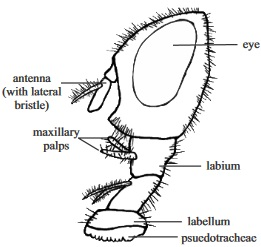
fig2.2: mouth parts of cockroach
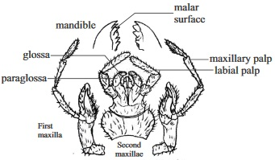
fig2.3: mouth part of grasshoppert
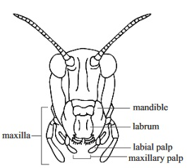
fig2.4: mouth part of mosquito
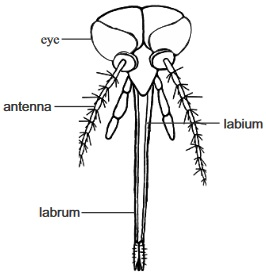
Alimentary canal and digestion of food in mammals
fig2.5: A tooth
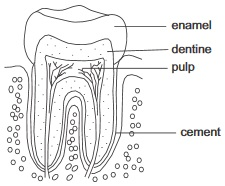
fig2.6: Human dentition
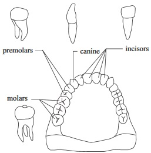
fig2.7: Human digestive system
Digestion, which is the breaking down of complex and large molecule food substances into simpler and smaller ones takes place in mammals in a long tube like structure called Alimentary canal or Gut. Alimentary canal begins at the mouth and ends at the anus. It also consists of the Gullet or oesophagus, stomach, small and large intestines. Different parts of the alimentary canal are modied into specialized organs and structures, which perform specic functions.
Digestion is of two types: Mechanical digestion and Chemical digestion.
In mechanical digestion, food is physically broken down into smaller particles by chewing in the mouth by the teeth and muscular churning by the muscular walls of the alimentary canal. This helps to prepare the food for quick chemical digestion by exposing large amount of food to action of enzymes through increase in surface area of the food particles.
Under chemical digestion, there is a chemical breakdown of complex molecules of food into simpler ones by the action of enzymes.
Various parts of the alimentary canal and their roles in food digestion
The mouth: Mechanical digestion starts at the mouth by the action of the teeth on the food. Several secretions are added to the food.
Mucus secretion from the cells lining the mouth moistens the food
Salivary secretions from the salivary gland, which not only moistens the food but starts off chemical digestion by converting starch to maltose. The tongue also helps to put the food in proper position
The Oesophagus: This carries food from the mouth to the stomach by a process which involves rhythmic muscular action called peristalsis and the lubricated oesophagus lining with mucous which eases food passage.
The Stomach: Food is received into the stomach from the esophagus by the relaxation of the rst sphincter muscle. Three kinds of cells make secretions at the stomach, one secretes mucous, the other enzymes while the third one secretes waterand hydrochloric acid. These three secretions together form gastric juice. The Hcl (hydrochloric acid) helps to break up connection tissue and cell membrane in food, it also kills many harmful bacteria. Pepsin breaks down protein into polypeptide. There is also rennin which cuddles the milk. The chemical digestion in the stomach is aided by the churning action of the second sphincter which moves food out of the stomach.The small intestine: The small intestine is of three parts: The duodenum which is the rst part, the Jejunum which is the second part and the third part called the ileum.
Secretions from the pancreas and gallbladder enter the small intestine at the duodenum. These secretions are pancreatic juice and bile (bile is produced by the liver but stored at the gall bladder) pancreatic juice contains digestive enzymes. Amylopsin which breaks down starch to maltose, lipase which breaks down fats and oil to fatty acids and glyceroland trypsin which breaks down proteins to polypeptides.Bile provides an alkaline medium for enzymes of the pancreatic juice to act; it adds water to the chyme (a thick creamy uid the food forms into in the stomach). It also breaks down fats into tiny droplets (emulsication).
At the illium digestion of carbohydrate, protein fats and oil is completed. Food here is more watery and it is called chyle
Digestion here is by the action of enzymes from the intestinal juice maltose is broken down to glucose by maltase. Erepsinbreaks down polypeptides to amino acids while lipase changes fats and oil to fatty acids and glycerol.
Absorption of digested food
Absorption of glucose, fatty acids and glycerol, amino acids, vitamins and mineral salts take place in the small intestine.The small intestine is well adapted to carry out the function by the presence of the following features
Folds and furrows in the walls of the small intestine which serves to increase its surface area
The presence of small ngerlike projections called villi which further gives it increased surface area.
A rich supply of blood vessels and lymphatic vessels containing blood and lymph
All absorbed food are brought to the liver via the lymphatic portal vein before they are assimilated into the body. the liver can convert, break down, store or leave unchanged the egested through the anus after more water absorption has taken place through the anus after more water absorption has taken place through the anus.
Feeding and digestion in other mammals
fig2.8: Digestive system of a rabbit
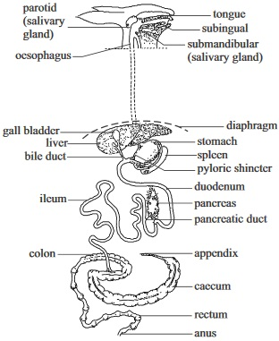
Part of the alimentary canal of hen
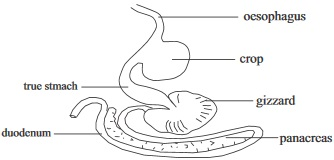
fig2.9: Alimentary canal of earthworm (dorsal view)
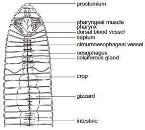
fig2.91: Tapeworm (a parasite) showing feeding parts
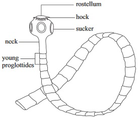
fig2.92: Alimentary canal of grasshopper
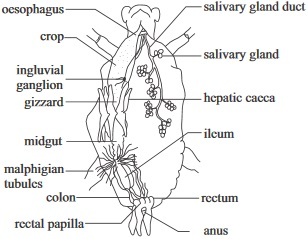
General Questions
1.The organic chemical substances that bring about chemical digestion is called digestive
2.
must take place before a complex food substances like starch can be absorbed into the blood stream.
3.In feeding mechanism, cilia is required in paramecium while pseodopods are needed for
4.In paramecium egestion takes place through the
5.Intracellular digestion occurs in unicellular protists like amoeba while in multicellular animals like earthworm digestion is
6.Peristalsis is a rhythmic muscular action at the alimentary canal while emulsication is a process of
reducing the surface tension of a substance (e.g fats)
increase the surface tension of a substance (e.g fats)
breaking down of protein to amino acid
7. Mechanical digestion takes place in the mouth mostly by the action of the teeth but in the stomach by
activity of enzymes
muscular movment of the stomach
Acidic action in the stomach
8.
is an adaptation for lter feeding , A proboscis also is an adaptation for
9. State the three parts of the small intestine
10.In a hydra,
in the endoderm brings about intracellular digestion after the initial extra cellular digestion on the wall of the gut.
fig2.93:
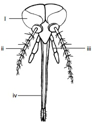
11.Identify the parts labeled (i) (ii) (iii) (iv)
12.Write down two plants that are carnivorous or intectivorous
(i) fern (ii) mosses
(i) Pitcher plant (ii) Venus fly trap
(i) Bryophylum (ii) Lily plant
14.
___________ is an example of a saprophytic micro organism.
Hydra
Fern
Rhizopus
15.The number, kinds and arrangement of teeth in the lower and upper jaw bones of a mammal is called